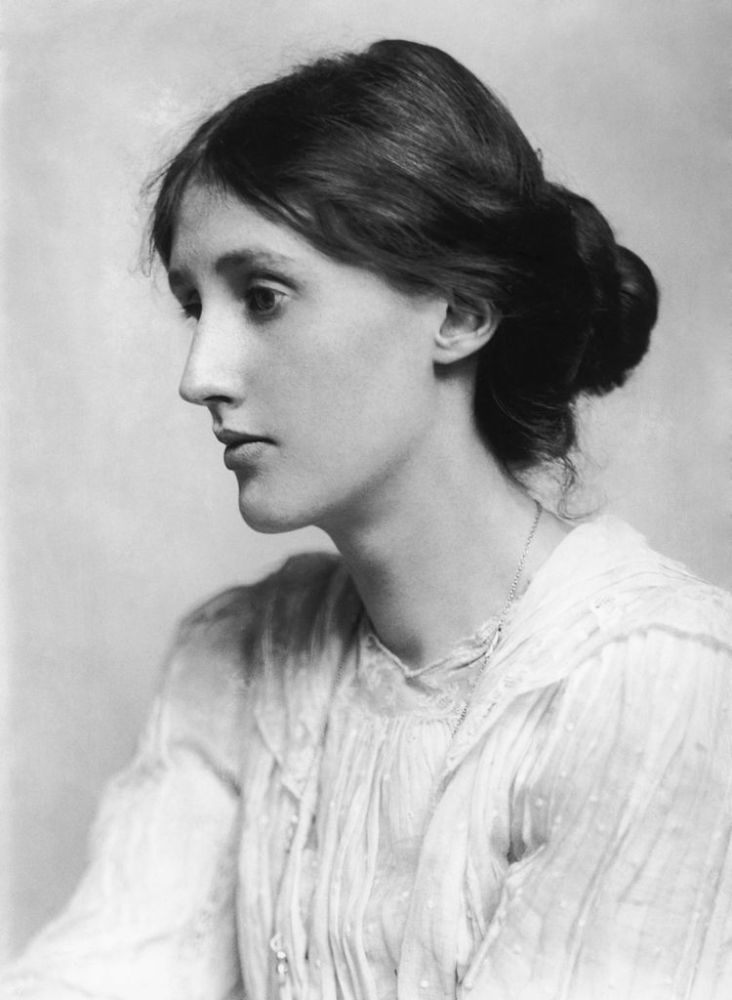

Virginia Woolf (1882 - 1941) tiểu thuyết gia và là một nhà văn tiểu luận người Anh, bà được coi là một trong những nhân vật văn học hiện đại lừng danh nhất thế kỉ 20.
Trong suốt thời gian giữa chiến tranh, Woolf là một nhân vật có tầm ảnh hưởng của xã hội văn học London và là một thành viên của Bloomsbury Group.
• Tuổi thơ
Virginia Woolf sinh ngày 25 tháng 1 năm 1882, tại thủ đô London sương mù. Bố mẹ bà là một cặp đôi ở hai thái cực khác nhau: Ngài Leslie Stephen là một học giả, nhà sử học, nhà văn và phê bình văn học nổi tiếng; trong khi mẹ bà Julia Stephen lại là một nhiếp ảnh gia, người mẫu cũng có tiếng không kém. Hai người đều đã từng trải qua một cuộc hôn nhân trước đó, nên rất tôn trọng và yêu thương nhau.
Không chỉ như vậy, gia đình Virginia còn rất đông đúc. Bố mẹ bà đều có con từ những cuộc tình trước, và tất cả các anh chị em chung nửa dòng máu đều sống dưới cùng một mái nhà. Đó là chưa kể đến số lượng lớn các bạn bè, khách khứa học giả của bố mẹ bà, luôn luôn đến thăm và ở lại nhà.
Nếu nền giáo dục chứa đầy những tri thức học giả từ bố mẹ bà là chưa đủ, những vị khách này lại cung cấp thêm những nguồn thông tin thực tế, những cuộc tranh luận từ khắp nơi đến Virginia. Từ bé, bà không chỉ quen với cuộc sống đầy học thuật, mà còn thường đắm mình trong các cuộc tranh luận và nhanh chóng có ý kiến của riêng mình.
Tuổi thơ hạnh phúc của bà đột nhiên phủ máu xám. Những người thân trong gia đình bà lần lượt qua đời vì bệnh tật. Mẹ bà ra đi đầu tiên năm bà 12 tuổi, mang đến sự suy sụp trong tâm trí bà con gái nhỏ. Tiếp đó là chị bà, và đến cái chết của cha thì Virginia đã không còn giữ được tâm trí mình. Sự suy sụp lần thứ hai của bà quá nặng nề và đã để lại di chứng đến hết đời: bà mắc bệnh rối loạn lưỡng cực. Sau cái chết của cha, bà mắc căn bệnh này trong khoảng thời gian lâu nhất trong đời.
Trong khoảng 2 tháng, một nửa thời gian bà cực kì vui vẻ, cười nói hát ca, mơ mộng ảo tưởng và kể chuyện liên tục với mọi người. Tâm trí bà hoạt động nhanh không ai bằng. Khoảng thời gian còn lại, bà trầm cảm, không muốn nói gì, và coi bản thân mình đầy tội lỗi, không đáng được sống.
Đây cũng là thời gian đầu tiên bà có những cố gắng tự hành hạ và tự tử. Tuy vậy, như nhà sử học cũng là cháu của Virginia đã kể lại, Virginia phân biệt cực kì rõ ràng những triệu chứng của mình, và bà lặp lại nó một cách có chu kì - bà đã chứng tỏ mình là một người phụ nữ sáng suốt chỉ bị mắc bệnh. Nhờ vậy, gia đình bà đã kịp thời có những phương cách trợ giúp bà hiệu quả.
• Tuổi trưởng thành phóng đãng
Sau khi trưởng thành, Virginia đi dạy ở trường đại học và viết các bài luận, bài phê bình, được đăng trên nhiều báo. Chị gái bà - Vanessa lấy chồng năm 1907. Hai chị em chuyển ra sống riêng trong một tòa nhà với rất nhiều những người bạn khác: họ đều là những cử nhân Cambridge.
Tuy vậy, cuộc sống độc lập của Virginia, cùng sống trong một tòa nhà nhiều đàn ông độc thân không phải chồng hay anh trai mình, đã gây ra nhiều phản ứng tiêu cực từ những người bạn cũ của bố mẹ bà.
Nhưng chính Virginia đã phát biểu, trong cuốn sách nổi tiếng của mình: “Một người phụ nữ nếu muốn viết văn thì phải có tự có tiền riêng và phải có một căn phòng riêng”.
Đây là một trong những phát biểu đầy nữ quyền và đầy nhân quyền đầu tiên trong văn học hiện đại. Virginia Woolf cùng với các bạn của mình đề cao sự tự do, độc lập, điều mà nhiều thanh niên thời đó còn thiếu sót. Đồng thời, việc sống độc lập và tự do cũng là một tuyên ngôn của nhóm thanh niên đi trước thời đại: họ chấp nhận những mặt khác của con người mà không đánh giá. Trong số các bạn của Virginia, có những học giả là người đồng tính. Họ hoàn toàn chấp nhận nhau và tự do sống theo cách của mình trong gia đình lớn ở tòa nhà Bloomsbury.
Virginia lấy chồng vào năm 1912, khi bà đã 30 tuổi. Bà lấy Leonardo Woolf, một trong số những người bạn sống cùng nhà của mình. Tuy ông là một người không có chức tước, và cũng không có gia sản giàu có như Virginia nhưng hai người đã có một cuộc sống vô cùng gắn bó, hạnh phúc. 25 năm sau ngày cưới, nhật kí của Virginia ghi lại rằng: “25 năm sau, chuyện yêu nhau của chúng tôi vẫn không thể tách rời. Bạn sẽ luôn cảm thấy niềm hạnh phúc to lớn, khi mãi được thèm muốn với tư cách một người vợ. Và như vậy, cuộc hôn nhân của chúng tôi đã viên mãn.”
Tuy vậy, tính tự do và mạnh mẽ, hoang dã của Virginia không bao giờ cạn kiệt. Trong những năm lấy chồng, bà đã có một cuộc tình với một người bạn gái khác: Vita Sackville-West, lúc đó cũng đã lấy chồng. Ông Leonardo biết trọn vẹn việc này và hoàn toàn chấp nhận sự độc lập của vợ. Cuộc tình của Virginia diễn ra trong khoảng hơn 7 năm, trong lúc đó, bà đã viết cuốn sách Orlando, kể về một người anh hùng vô danh sống qua 3 thế kỉ và những thiên tình sử với cả hai giới. Cuốn sách được con trai của Vita coi là “Bức thư tình vĩ đại nhất của Virginia với Vita.” Sau khi chia tay, hai bà vẫn còn là bạn tốt cho đến khi qua đời.
• Cái chết mà bà lựa chọn
Vào ngày 28 tháng 3 năm 1941, Virginia đã tự trầm mình trong một cái ao gần nhà, sau khi tạm biệt chồng và tự đi dạo quanh khu bà ở. Người ta đã từng nghĩ rằng bà gặp tai nạn, hay tự tử vì đã lên cơn bệnh. Nhưng bức thư bà để lại cho chồng đã vén hết bức màn bí mật: bà đã tự chọn cái chết cho mình.
Trong đó, bà viết: “Người yêu quý, em cảm thấy rất rõ ràng em lại sắp bị bệnh. Em cảm thấy chúng ta không thể vượt qua những điều kinh hoàng như vậy nữa. Và lần này, em không thể phục hồi.
Em bắt đầu nghe thấy những giọng nói, và em không thể tập trung. Vì vậy em sẽ làm điều tốt nhất cho cả hai chúng ta… Em chỉ muốn nói rằng, mọi hạnh phúc em có trên đời, là do có anh... Tâm trí em rời bỏ em, ngoại trừ một điều, anh là điều tốt nhất với em… Em không thể tiếp tục làm hại cuộc đời anh. Chúng ta đang là những người hạnh phúc nhất trên cuộc đời này. V (chữ đầu tiên trong tên của Virginia) ”
Có lẽ, đó thực sự là điều tốt nhất mà bà có thể làm cho những người Virginia yêu thương. Với sự mạnh mẽ vốn có, bà không thể chịu nổi cảnh sẽ trở thành một gánh nặng tuổi già cho chồng mình, hay việc ông sẽ phải nhìn bà chết dần chết mòn trong sự điên loạn.
Bà đã làm cái việc to lớn nhất trong cả một đời người: chọn cái chết cho mình, làm chủ cuộc đời mình cho đến tận cái chết.
• Những tác phẩm nổi tiếng nhất của bà:
— Đêm Và Ngày (Night and Day, 1919).
— Căn Phòng Của Jacob (Jacob’s Room, 1922).
— Bà Dalloway (Mrs.Dalloway, 1925).
— Đến ngọn Hải Đăng (To the Lighthouse, 1927).
— Orlando (1928)
— Một Căn Phòng Riêng (A Room of One’s Own, 1929).
— Những Đợt Sóng (The Waves, 1931).
— Ba Đồng Tiền Vàng (Three Guineas, 1938).